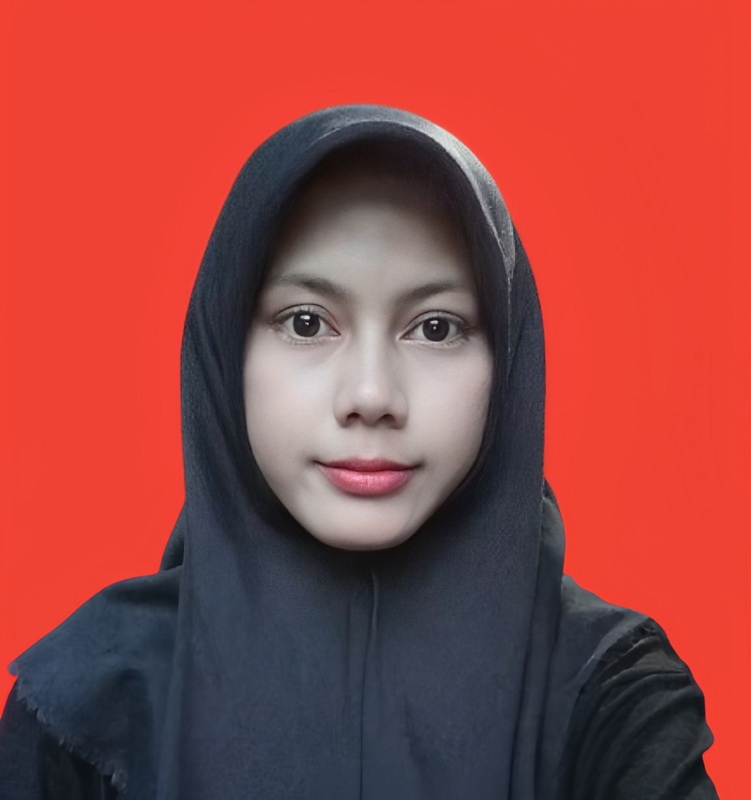
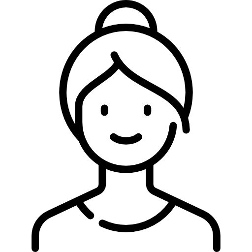

Selamat Datang!
Laman resmi informasi akademik, aktivitas perkuliahan, serta portofolio pribadi Eti Sunanti, mahasiswa Program Studi Sistem Informasi Universitas Kuningan.

Laman resmi informasi akademik, aktivitas perkuliahan, serta portofolio pribadi Eti Sunanti, mahasiswa Program Studi Sistem Informasi Universitas Kuningan.
Saya adalah mahasiswa aktif Program Studi Sistem Informasi, Fakultas Ilmu Komputer, Universitas Kuningan. Laman ini dikelola secara mandiri guna menyajikan catatan perkuliahan, tugas praktikum, serta aktivitas akademik.
Usia: 58 Tahun | Pekerjaan: Wiraswasta

Usia: 58 Tahun | Pekerjaan: Ibu Rumah Tangga
Usia: 31 Tahun | Status: Menikah
💖 "Keluarga adalah fondasi utama, sumber doa, dan pendukung terbesar dalam setiap perjalanan pendidikan serta impian saya."
| Hari | Mulai | Selesai | Mata Kuliah | Dosen | Ruang |
|---|---|---|---|---|---|
| Senin | 13.00 | 14.25 | Riset Operasi | Nita Mirantika, S.T., M.Pd. | Ruang H |
| Senin | 14.40 | 16.15 | Pemrograman Dasar | Aji Permana, S.Kom., M.Kom. | Ruang I |
| Selasa | 09.40 | 11.15 | Statistika Data | Arief Surya Lesmana, S.Stat., M.M. | Ruang K |
| Rabu | 08.00 | 09.40 | Arsitektur Komputer & Sistem Operasi | Ragel Trisudarmo, M.Kom. | Ruang Kosong |
| Rabu | 10.30 | 12.05 | Analisis & Perancangan Sistem Informasi | Erik Kurniadi, S.Kom., M.Kom. | Ruang E |
| Rabu | 13.00 | 14.35 | Kalkulus | Azin Taufik, S.Pd., M.Pd. | Ruang I |
| Kamis | 09.40 | 11.15 | English Communication For IT | Roni Nursyamsu, S.Pd., M.Pd. | Ruang A |
| Kamis | 13.00 | 14.35 | Web Desain | Dede Irawan, M.Kom. | Ruang C |
| Jum'at | 08.00 | 10.25 | Analisis Proses Bisnis | Dyah Puteria Wati, M.Kom. | Ruang I |
| Hari | Mulai | Selesai | Mata Kuliah Praktikum | Dosen | Laboratorium |
|---|---|---|---|---|---|
| Selasa | 08.00 | 09.35 | Analisis & Perancangan Sistem Informasi | Erik Kurniadi, S.Kom., M.Kom. | Lab. Multimedia |
| Selasa | 14.40 | 16.15 | Pemrograman Dasar | Aji Permana, S.Kom., M.Kom. | Lab. RPL |
| Kamis | 08.00 | 09.35 | Web Desain | Dede Irawan, M.Kom. | Lab. RPL |
| Jum'at | 13.00 | 14.35 | Statistika Data | Arief Surya Lesmana, S.Stat., M.M. | Lab. Multimedia |
Klik tautan di bawah ini untuk melihat direktori modul praktikum di GitHub:
Portofolio proyek akhir dan dokumentasi rancangan sistem informasi perkuliahan.
+62 812-xxxx-xxxx
Senin – Jum'at
08.00 – 16.15 WIB
Kampus 1: Jl. Cut Nyak Dhien No. 36A, Cijoho, Kuningan
Kampus 2: Jl. Pramuka No. 67, Purwawinangun, Kuningan